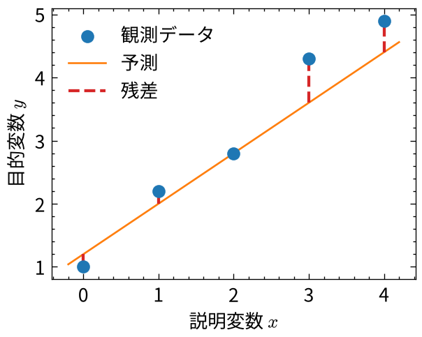
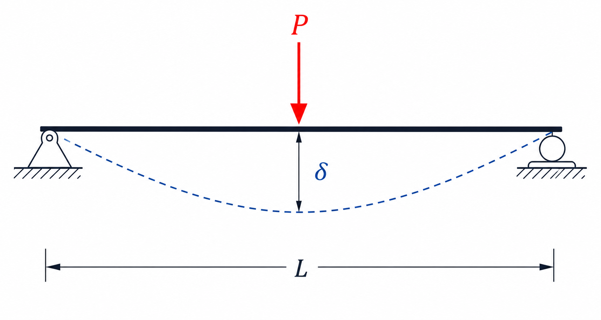
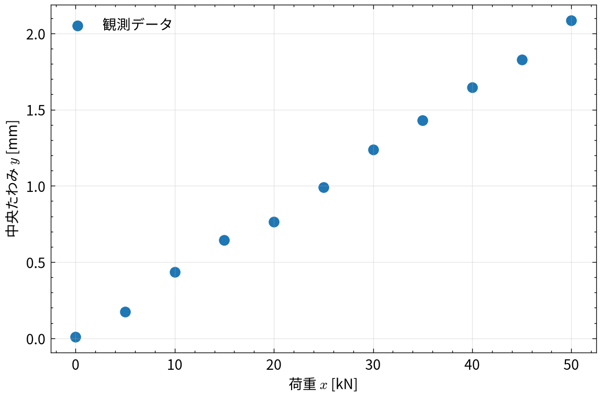
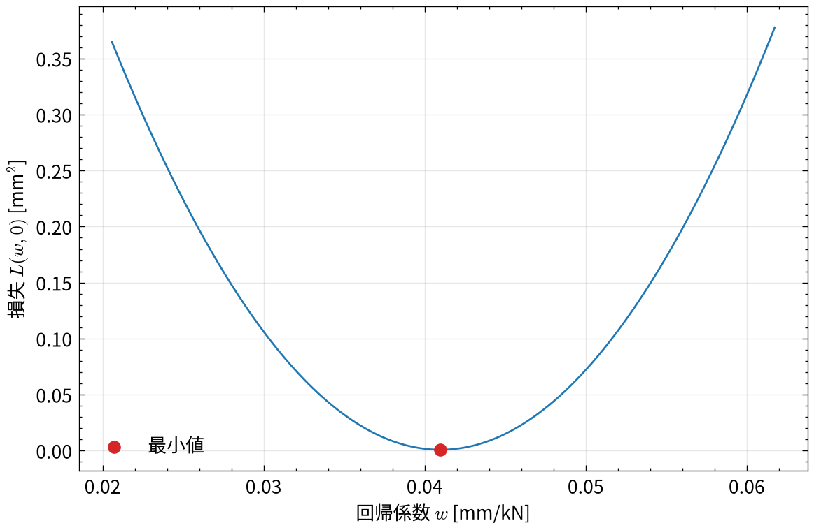
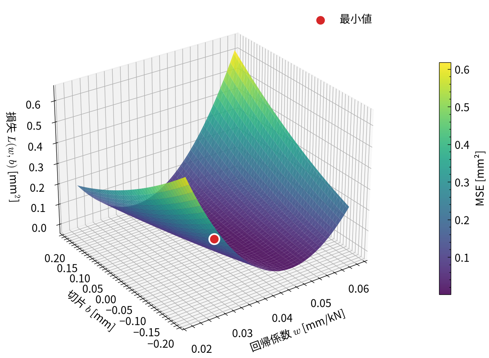
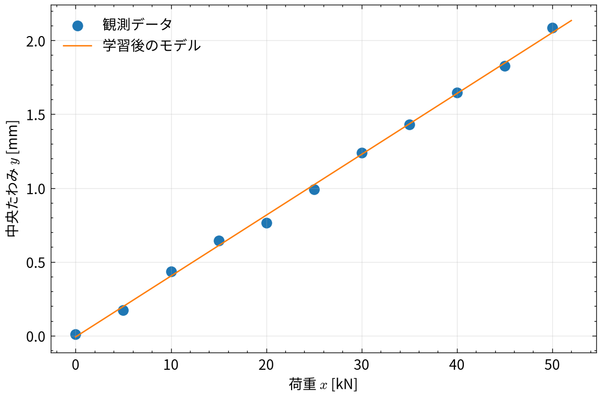

1 単回帰
1.1 この章で学ぶこと
この章では、1つの説明変数から1つの目的変数を予測する単回帰を扱います。 単回帰は最も基本的な回帰モデルの1つです。 次に示す機械学習の基本を具体的な計算を通して理解するのに適しています。
- 予測と正解のずれを測る損失関数
- 損失が小さくなるパラメータを探す学習
モデル、損失関数、パラメータの最適化という枠組みは、後に扱う ニューラルネットワークにも共通しています。
1.2 教師あり学習
本資料で扱う機械学習のほとんどは教師あり学習です。 教師あり学習では、入力とそれに対応する出力の組がデータとして与えられる場合に、その入出力間の関係をデータから学習します。
1.3 単回帰モデル
正解が連続値である問題を回帰問題と呼びます。 そのうち、1つの変数 \(x\) から1つの変数 \(y\) を予測するモデルが単回帰です。 ここで、入力となる変数を説明変数、出力となる変数を目的変数と呼びます。
単回帰では、説明変数と目的変数の関係を次の1次式で表します。
\[ \hat{y} = wx + b \tag{1.1}\]
ここで、\(\hat{y}\) はモデルによる予測値です。目的変数の観測値 \(y\) と区別するため、 予測値にはハットを付けて表しています。
| 記号 | 名称 | 内容 |
|---|---|---|
| \(x\) | 説明変数 | モデルに入力する値 |
| \(y\) | 目的変数 | データとして観測された値 |
| \(\hat{y}\) | 予測値 | モデルが出力する目的変数の推定値 |
| \(w\) | 重み（傾き） | \(x\) の変化に対する \(\hat{y}\) の変化率 |
| \(b\) | バイアス（切片） | \(x=0\) における予測値 |
\(w\) と \(b\) は、単回帰モデルの予測結果を規定するパラメータです。 パラメータの値が変われば、同じ \(x\) を入力しても予測値 \(\hat{y}\) は変化します。
1.4 損失関数と学習
単回帰モデルを作成するには、そのパラメータ（\(w\) と \(b\)）を決めればいいです。 何かしらの観測データが与えられる場合、そのデータに最も適合するように決めます。 その適合度合いを定量的に評価するために、損失関数を定義します。 損失関数は、モデルの予測値と観測値の差を定量化する関数です。 ここで、損失関数を観測値と予測値の平均二乗誤差（MSE: Mean Squared Error）で表す場合、損失関数は次式で表すことができます。
\[ L(w,b) = \frac{1}{N}\sum_{i=1}^{N} \left(y_i-\hat{y}_i\right)^2 = \frac{1}{N}\sum_{i=1}^{N} \left\{y_i-(wx_i+b)\right\}^2 \tag{1.2}\]
図 1.1 は、単回帰モデルにおける残差と損失関数の関係を示したものです。 赤い破線は、各観測値 \(y_i\) と予測値 \(\hat{y}_i\) の差、すなわち残差を表します。 MSEは、これらの残差を二乗して平均した値です。
ここで、\(i\) 番目のデータに対する観測値を \(y_i\)、予測値を \(\hat{y}_i\) とし、\(N\) はデータ数としています。 ここで考える単回帰モデルの学習とは、 この損失関数を最小にするパラメータ \(w\) と \(b\) をデータに基づいて求めることです。
1.4.1 偏微分によるパラメータの決定
式 1.2 は \(w\) と \(b\) に関する二次関数です。したがって、\(x_i\) がすべて同じ値でない場合、 損失関数は唯一の最小値をもちます。その最小値では、\(w\) と \(b\) に関する偏微分がともに 0になります。
まず、\(w\) に関する偏微分は
\[ \frac{\partial L}{\partial w} = -\frac{2}{N}\sum_{i=1}^{N} x_i\left\{y_i-(wx_i+b)\right\} \tag{1.3}\]
となります。同様に、\(b\) に関する偏微分は
\[ \frac{\partial L}{\partial b} = -\frac{2}{N}\sum_{i=1}^{N} \left\{y_i-(wx_i+b)\right\} \tag{1.4}\]
です。式 1.4 を0とおくと、
\[ \sum_{i=1}^{N}y_i -w\sum_{i=1}^{N}x_i -Nb=0 \]
が得られます。ここで、\(x\) と \(y\) の標本平均を
\[ \bar{x}=\frac{1}{N}\sum_{i=1}^{N}x_i, \qquad \bar{y}=\frac{1}{N}\sum_{i=1}^{N}y_i \]
とすると、切片 \(b\) は
\[ b=\bar{y}-w\bar{x} \tag{1.5}\]
と表されます。これを 式 1.3 に代入して整理すると、
\[ \sum_{i=1}^{N} (x_i-\bar{x})(y_i-\bar{y}) -w\sum_{i=1}^{N}(x_i-\bar{x})^2 =0 \]
となります。したがって、損失関数を最小にするパラメータは
\[ w^* = \frac{ \displaystyle\sum_{i=1}^{N}(x_i-\bar{x})(y_i-\bar{y}) }{ \displaystyle\sum_{i=1}^{N}(x_i-\bar{x})^2 } \tag{1.6}\]
および
\[ b^*=\bar{y}-w^*\bar{x} \tag{1.7}\]
です。 このように、単回帰では損失関数を最小にするパラメータを解析的に直接計算できます（もっと複雑な回帰モデルの場合は、損失関数が2次関数のような単純形状とはならないため、最適化のための手法を使います）。
1.5 例題：荷重から梁の中央たわみを予測する
ここからは、単回帰による予測と学習の具体例として、単純支持梁に作用する集中荷重から 梁中央のたわみを予測します。対象とする梁と載荷条件を 図 1.2 に示します。

支間長 \(L\) の単純支持梁の中央に集中荷重 \(P\) が作用するとき、Euler–Bernoulli の梁理論に よれば、線形弾性範囲における中央たわみ \(\delta\) は
\[ \delta = \frac{PL^3}{48EI} \]
で与えられます。ここで、\(L\) は梁の長さ、\(E\) はヤング率、\(I\) は断面二次モーメントです。 \(L\)、\(E\)、\(I\) が一定であれば、\(\delta\) は \(P\) に比例するため、両者の関係を単回帰で モデル化できます。
この例では、単回帰モデルの各変数を次のように対応させます。
| 機械学習上の変数 | この例における物理量 |
|---|---|
| 説明変数 \(x\) | 梁に作用する荷重 [kN] |
| 目的変数 \(y\) | 梁中央で計測したたわみ [mm] |
| 予測値 \(\hat{y}\) | モデルが予測した中央たわみ [mm] |
| 回帰係数 \(w\) | 単位荷重当たりのたわみ [mm/kN] |
| 切片 \(b\) | 荷重が0のときの推定たわみ [mm] |
このとき、\(w\) は梁のたわみやすさに相当します。理想化した理論式では \(b=0\) ですが、実験では初期たわみ、変位計のゼロ点誤差などにより、 推定された切片が0にならない場合があります。
1.5.1 物性値と観測データの作成
載荷実験を模擬するため、鋼製の単純支持梁を想定し、材料特性と断面寸法を次のように 設定します。
| 物理量 | 記号 | 設定値 |
|---|---|---|
| ヤング率 | \(E\) | \(205\ \mathrm{GPa}\) |
| 支間長 | \(L\) | \(3.0\ \mathrm{m}\) |
| 断面幅 | \(B\) | \(0.10\ \mathrm{m}\) |
| 断面高さ | \(H\) | \(0.20\ \mathrm{m}\) |
矩形断面の断面二次モーメントは \(I=BH^3/12\) です。これらの物性値と寸法を用いて 理論たわみを計算し、そこへ平均0、標準偏差 \(0.03\ \mathrm{mm}\) の正規分布に従う 測定誤差を加えて観測データを模擬したデータを作成します。
# 梁の物性値と寸法
young_modulus = 205e9 # Young率 [Pa]
span_length = 3.0 # 支間長 [m]
section_width = 0.10 # 断面幅 [m]
section_height = 0.20 # 断面高さ [m]
second_moment = section_width * section_height**3 / 12 # [m^4]
# 載荷条件
x = np.linspace(0, 50, 11) # 荷重 [kN]
load_newton = x * 1e3 # kNからNへ変換
# Euler--Bernoulli梁理論による中央たわみ
y_true = (
load_newton * span_length**3 / (48 * young_modulus * second_moment)
) * 1e3 # mからmmへ変換
# 測定誤差を加えた観測値
rng = np.random.default_rng(42)
measurement_std = 0.03 # 測定誤差の標準偏差 [mm]
y = y_true + rng.normal(0.0, measurement_std, size=x.size)実際の学習で利用できるのは、荷重 \(x\) と観測されたたわみ \(y\) の組だけです。 まず、作成した観測データのみを 図 1.3 に示します。

観測値は荷重とともにほぼ直線的に増加していますが、測定誤差を加えているため、 理論上の一直線上には並びません。以下では、理論式や設定した物性値を学習には使用せず、 観測データ \((x_i,y_i)\) のみから単回帰モデルのパラメータを決定します。
1.5.2 切片を固定した場合の損失関数
まず、理想的な梁では無載荷時のたわみが0になることを利用し、切片を \(b=0\) mmに固定します。 回帰係数 \(w\) だけを変化させると、損失関数 \(L(w,0)\) は1変数の二次関数になります。

図 1.4 の最小点が、\(b=0\) mmという制約のもとで観測データに最も適合する 回帰係数です。切片を固定したため、損失は \(w\) のみの関数として平面上に表示できます。
1.5.3 回帰係数と切片を変化させた場合の損失関数
次に、\(w\) と \(b\) の両方を変化させます。この場合、入力となるパラメータが2つ、出力となる 損失が1つであるため、損失関数 \(L(w,b)\) を3次元曲面として表現できます。
# 最小二乗解
x_mean = np.mean(x)
y_mean = np.mean(y)
w_opt = np.sum((x - x_mean) * (y - y_mean)) / np.sum((x - x_mean) ** 2)
b_opt = y_mean - w_opt * x_mean
y_fitted = w_opt * x + b_opt
mse_opt = np.mean((y - y_fitted) ** 2)
図 1.5 の曲面は下に凸の形状をしており、赤い点で示した位置で最小となります。 この点の \(w\) 座標と \(b\) 座標が、MSEを最小にする単回帰モデルのパラメータです。
1.5.4 最小二乗解と回帰結果
式 1.6 と 式 1.7 から得られたパラメータとMSEを確認します。
print(f"最適な回帰係数 w*: {w_opt:.5f} mm/kN")
print(f"最適な切片 b*: {b_opt:.5f} mm")
print(f"最小MSE: {mse_opt:.6f} mm²")最適な回帰係数 w*: 0.04121 mm/kN
最適な切片 b*: -0.00796 mm
最小MSE: 0.000751 mm²最後に、観測データと学習後の回帰直線を 図 1.6 に示します。

回帰直線は測定誤差を含む各観測点を完全には通過しません。単回帰では、個々の観測点に 一致することではなく、すべての観測点に対する残差の二乗平均を最小にすることを目的として パラメータを決定します。
1.6 まとめ
- 単回帰は、1つの説明変数と目的変数の関係を直線で表現するモデルである。
- モデルは \(\hat{y}=wx+b\) と表される。
- \(w\) と \(b\) は観測データに基づいて決定されるモデルパラメータである。
- 残差は、観測値と予測値の差である。
- 平均二乗誤差は、モデルの観測データへの適合度を定量化する損失関数である。
- 学習の目的は、損失関数を最小化するパラメータを求めることである。
- 単回帰では、MSEを \(w\) と \(b\) で偏微分することで最適なパラメータを解析的に求められる。
1.7 付録：完全な実行コード
本章で解説した一連の処理（観測データの生成、理論値の計算、解析的な最小二乗法のパラメータ推定、および結果の可視化）を、単一のPythonファイル（.py）としてそのまま実行できるようにまとめた完全なコードです。
完全なPythonスクリプトを表示
import matplotlib.pyplot as plt
import numpy as np
plt.rcParams["font.family"] = "Noto Sans CJK JP"
plt.rcParams["axes.unicode_minus"] = False
# -------------------------------------------------------------
# 1. 梁の諸元と理論値の計算
# -------------------------------------------------------------
span_length = 3.0 # 支間長 L [m]
young_modulus = 205e9 # Young率 E [Pa]
section_width = 0.10 # 断面幅 [m]
section_height = 0.20 # 断面高さ [m]
second_moment = section_width * section_height**3 / 12 # [m^4]
# 集中荷重 P [kN] に対する中央たわみ delta [mm] の理論上の傾き w [mm/kN]
# delta = (P * 10^3 * L^3) / (48 * E * I) * 10^3 = (L^3 / (48 * E * I)) * 10^6 * P
w_theory = (span_length**3 / (48 * young_modulus * second_moment)) * 1e6
b_theory = 0.0
print(f"理論上の回帰係数 w: {w_theory:.5f} mm/kN")
print(f"理論上の切片 b: {b_theory:.5f} mm")
# -------------------------------------------------------------
# 2. 観測データの生成（人工データ）
# -------------------------------------------------------------
rng = np.random.default_rng(42)
# 集中荷重 P [kN]
x = np.linspace(0, 50, 11)
# 梁理論による中央たわみ + 測定誤差ノイズ
noise = rng.normal(0.0, 0.03, size=x.size)
y = w_theory * x + noise
# -------------------------------------------------------------
# 3. 最小二乗法によるパラメータの最適化（解析解）
# -------------------------------------------------------------
x_mean = np.mean(x)
y_mean = np.mean(y)
# 最適な傾き w* と切片 b*
w_opt = np.sum((x - x_mean) * (y - y_mean)) / np.sum((x - x_mean) ** 2)
b_opt = y_mean - w_opt * x_mean
# 予測値と平均二乗誤差（MSE）
y_pred = w_opt * x + b_opt
mse_opt = np.mean((y - y_pred) ** 2)
print("\n--- 単回帰の学習結果 ---")
print(f"推定された回帰係数 w*: {w_opt:.5f} mm/kN (理論値との誤差: {abs(w_opt - w_theory):.5f})")
print(f"推定された切片 b*: {b_opt:.5f} mm")
print(f"最小平均二乗誤差 MSE: {mse_opt:.6f} mm^2")
# -------------------------------------------------------------
# 4. 結果のプロット
# -------------------------------------------------------------
x_line = np.linspace(0, 52, 200)
y_line_fitted = w_opt * x_line + b_opt
y_line_theory = w_theory * x_line
plt.figure(figsize=(7.5, 4.8))
plt.scatter(x, y, color="tab:blue", s=45, label="観測データ")
plt.plot(x_line, y_line_fitted, color="tab:orange", linewidth=2.0, label=f"回帰直線 (w={w_opt:.4f}, b={b_opt:.4f})")
plt.plot(x_line, y_line_theory, color="tab:green", linestyle="--", linewidth=1.5, label=f"梁理論 (w={w_theory:.4f})")
plt.xlabel("集中荷重 $P$ [kN]")
plt.ylabel(r"中央たわみ $\delta$ [mm]")
plt.title("単回帰による梁の中央たわみ予測")
plt.grid(alpha=0.3)
plt.legend()
plt.tight_layout()
plt.show()